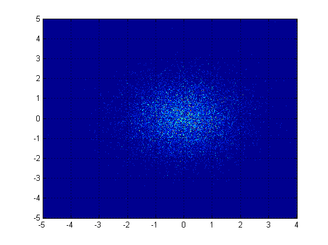
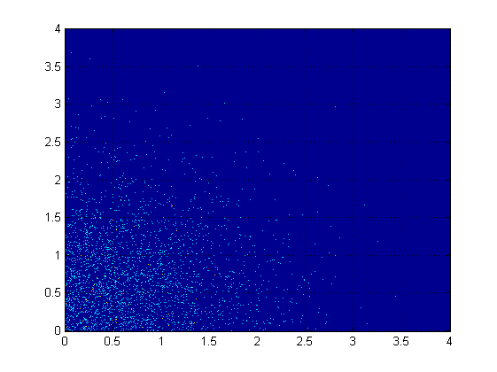
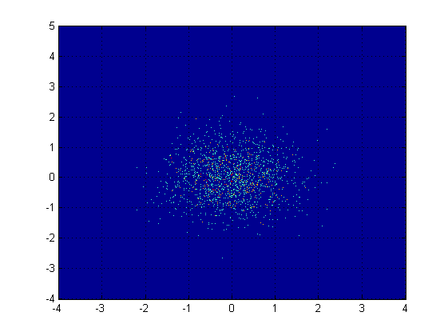
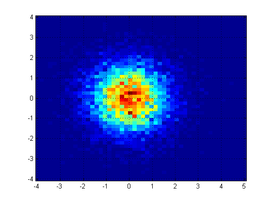
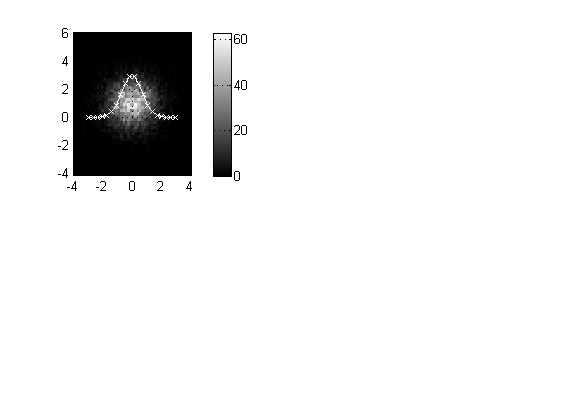
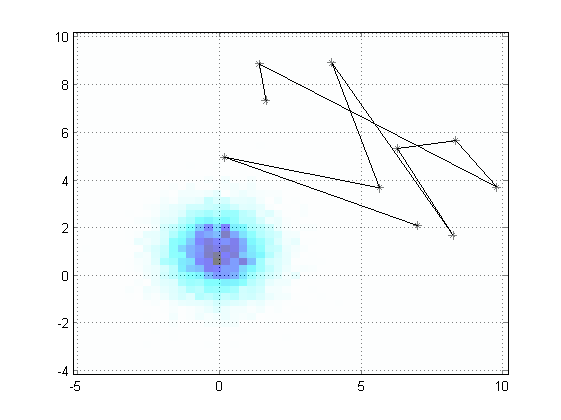

Contents
Default cloud plot
cloudPlot( randn(10000,1), randn(10000,1));

Only show the upper right hand quadrant
cloudPlot( randn(10000,1), randn(10000,1), [0 4 0 4] );

Use logarithmic scale
cloudPlot( randn(10000,1), randn(10000,1), [], true);

Use only a few bins
cloudPlot( randn(10000,1), randn(10000,1), [], [], [50 50] );

Plot a subplot with normal curve on top, using colorbar and colormap
subplot ( 2, 2, 1 );
cloudPlot( randn(10000,1), randn(10000,1)+1, [], [], [50 50] ); hold on;
colorbar;
colormap( gray(256) );
plot ( linspace(-3,3,20), 3*exp(-(linspace(-3,3,20).^2)), 'wx-' ); hold off;

Use hold states and transluscent images.
subplot ( 1, 1, 1 );
plot ( 10*rand(10,1), 10*rand(10,1), 'k*-' ); hold on;
h = cloudPlot( randn(10000,1), randn(10000,1)+1, [], [], [50 50] ); hold off;
set ( h, 'AlphaData', 0.5 );
colormap(1-hot);
